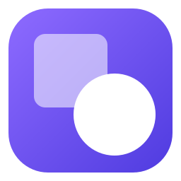

Morph
Convert files right from the
Windows 11 right-click menu.
JPG
PNG
WebP
AVIF
HEIC
PDF
MP4
MP3
DOCX
Free
Open source
Works offline
Open
Enter
Set as desktop background
Rotate right
Rotate left
Morph
Compress to ZIP file
Copy as path
Ctrl+Shift+C
Properties
Alt+Enter
Show more options
Shift+F10
Convert to JPG…
Convert to PNG…
Convert to WebP…
Convert to AVIF…
Convert to PDF…
Compress…
Resize…
Remove metadata…
More options…
6 converted · saved 11.8 MB
Saved next to the original files
6 / 6
IMG_2041.jpg
→ WebP
4.2 MB → 2.2 MB
−48%
Open